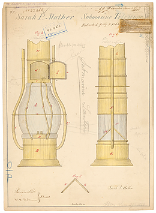

Date personale
Un acvascop (denumit și bathyscope ) este un dispozitiv de vizualizare sub apă . Este folosit pentru a vedea lumea subacvatică deseori din uscat sau o barcă. Elimina strălucirea suprafeței apei și permite vizualizarea în măsura în care claritatea apei și lumina permit.
Copilăria
O versiune mai avansată, un telescop subacvatic a fost brevetat de Sarah Mather în 1845 - Brevetul SUA nr. 3.995; a permis vaselor navigabile să cerceteze adâncimile oceanului. A folosit o lampă de camfină într-un glob de sticlă care a fost scufundat în apă. În 1864, Sarah Mather a adăugat o îmbunătățire - Brevetul SUA nr. 43.465 la invenția sa anterioară pentru a detecta navele de război subacvatice din Sud .
